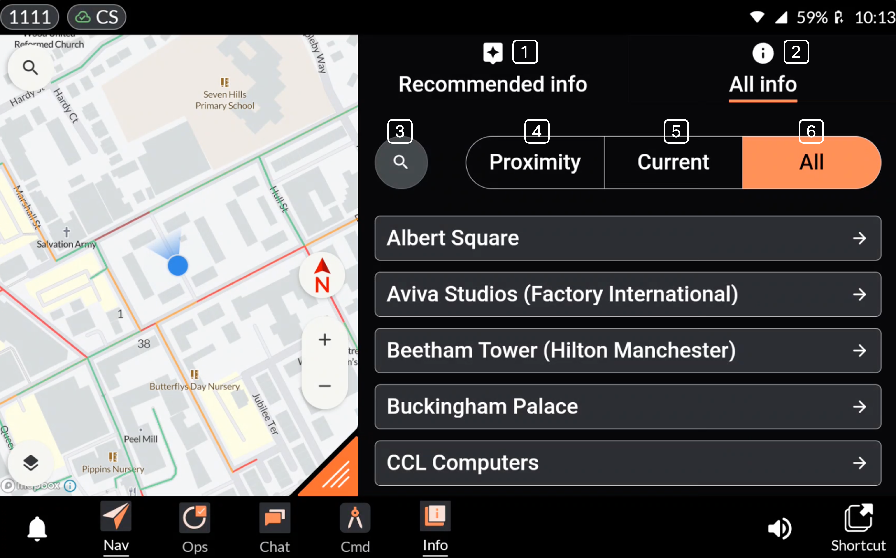
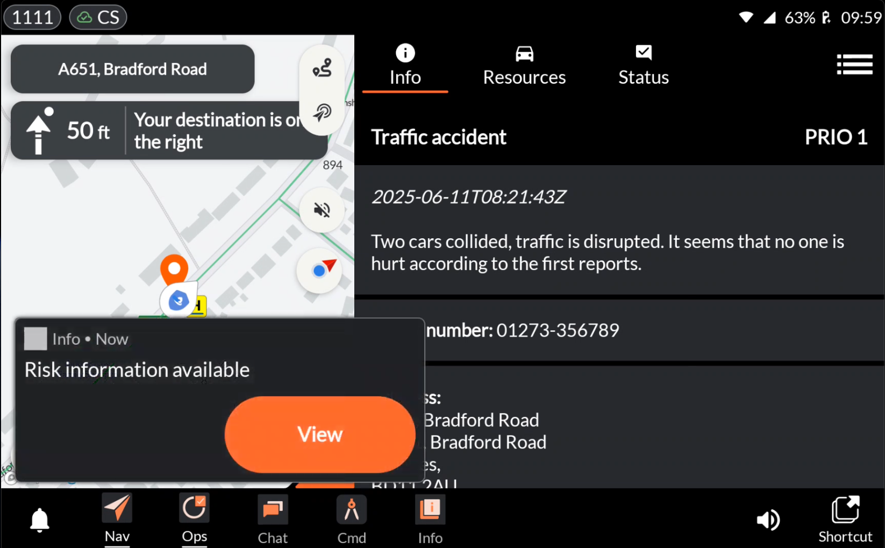

Application: Info¶
Developer: Evam
Availability: World-wide
Description: Your central hub for information linked to geographical locations, UPRNs, incident types, and date & time. Receive smart information recommendations as notifications and access your complete data repository in the Info app.
Create and manage information in the Evam Central Services web interface, or integrate with an existing documentation library.
Receive information recommendations based on the active incident. These may be triggered by factors such as incident location, UPRN, incident type, and date & time. Recommendations are delivered as notifications once the incident is acknowledged.
Access your full information library in the Info app. Users can easily search and browse all available information directly within the app.
User instructions¶
The overall functionalities of the Info app are as follows:

1. Recommended info: Quickly access recommended information for the active incident here.
2. All info: Access your full information repository. Here, you’ll find all available information cards - whether you’re on an active incident or not.
3. Search: Search your information repository using the magnifying glass to quickly find the information you need from your library.
4. Proximity: Filter information relevant to the area in close proximity to the incident destination.
5. Current: Filter information tied to the current date and time. If the recommendation settings are configured to suggest information based on date and time, relevant content will appear under “Current” when the set date and time match the actual date and time.
6. All: Filter to view all available information in your repository.
Recommended Information as Notifications¶
When a user is mobilized to an incident and relevant information is available, a recommendation is shown as a notification.

Pressing “View” takes the user to the Info app, where the recommended information is displayed.
FAQ¶
Is the full information repository stored offline in the app on the tablet?
Once the user is mobilized to an incident, the app buffers the information linked to the active incident, as well as information related to the proximity of the incident destination. This ensures the user can access relevant information even in the event of a temporary mobile network outage.
Note that PDFs and images are not buffered and therefore require an active mobile network connection to be accessed.
The information repository can contain thousands of information cards, making it impractical to store the entire library offline in a smooth and efficient manner. Additionally, from a data security perspective, storing sensitive information unrelated to the ongoing incident is considered poor practice and may breach best practices for handling sensitive data.